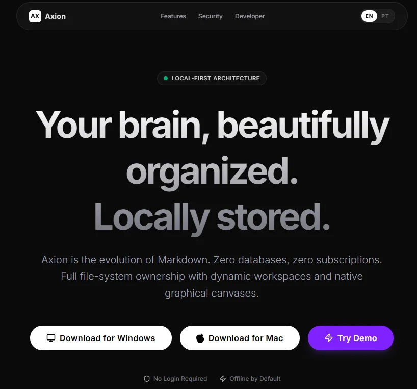
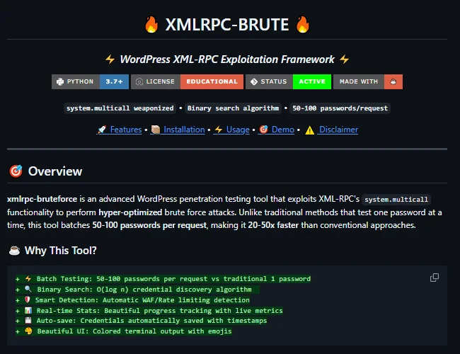
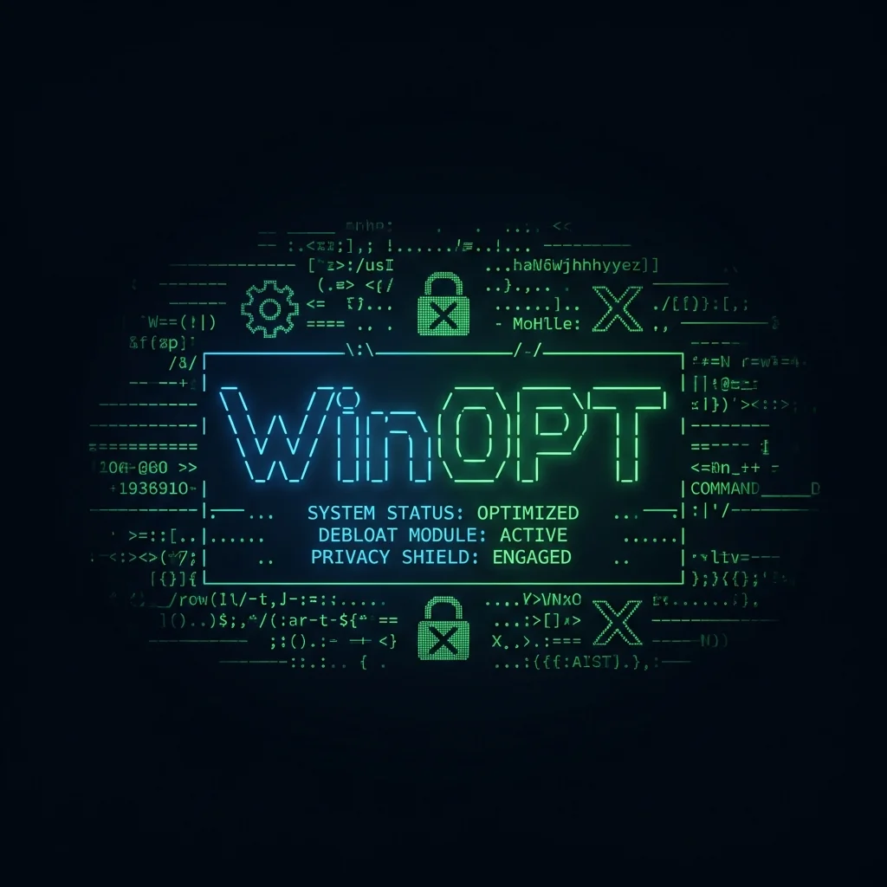

███ █████
░░░ ░░███
████████ ████████ ██████ █████ ██████ ██████ ███████ █████
░░███░░███░░███░░██ ███░░███░░███ ███░░██ ███░░███░░░███░ ███░░
░███ ░███ ░███ ░░░░███ ░███ ░███░███████░███ ░░░ ░███ ░░█████
░███ ░███ ░███ ░███ ░███ ░███░███░░░ ░███ ███ ░███ ███░░░░███
░███████ █████ ░░██████ ░███░░██████░░██████ ░░█████ ██████
░███░░░ ░░░░░ ░░░░░░ ░███ ░░░░░░ ░░░░░░ ░░░░░ ░░░░░░
░███ ███ ░███
█████ ░░██████
░░░░░ ░░░░░░
Softwares

Security

XMLRPC-Bruteforce
●LIVE
Python script for WordPress XML-RPC brute force attacks. Efficient and multi-threaded tool for security testing.

WinOPT Core
●LIVE
Safe Windows optimization tool for corporate environments. Privacy and performance tweaks via CLI.